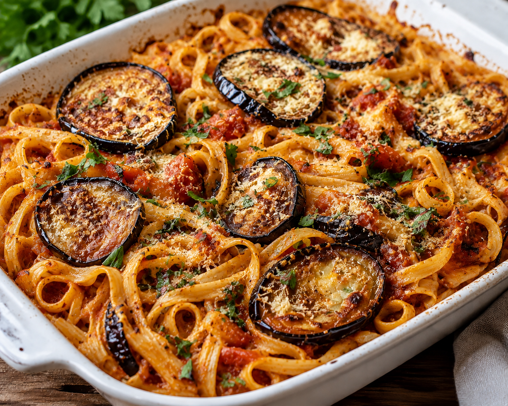

Home
Brinjal Pasta

Description
A delicious dish combining pasta of your choice with lightly fried brinjals.
This dish can be served as a main course or as a side.
Ingredients
- 4 large brinjals
- oil for frying
- 500 gr fettuchini or tagliatelle
- 6 ripe tomatoes, grated
- salt & pepper to taste
- garlic to taste
- 1 tbls olive oil
- chopped parsley, optional
Steps
- Wash & slice brinjals into 1cm rounds, salt & leave for 1 hour in a colander to drain.
- Cook paste for 3/4 hour of the time indicated on the package, drain & rinse.
- Place tomatoes, crushed garlic, olive oil, salt & pepper in a pot & bring to a boil, lower heat & simmer uncovered for 10 minutes.
- Lightly fry brinjals in hot oil, remove & place in colander to drain excess oil.
- Place half the brinjals in a large ovenproof dish, add the pasta & cover with the remaining brinjals.
- Pour over tomato sauce & bake at 180°C for 15-20 minutes.
- Garnish with parsley.